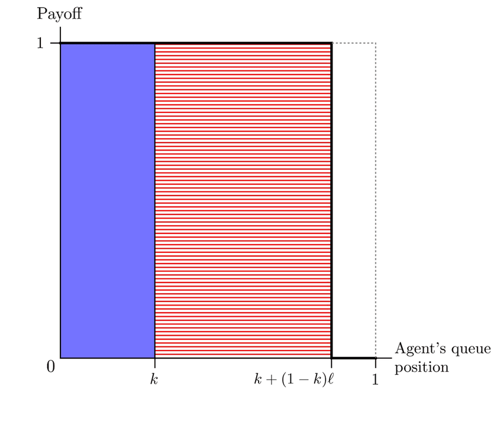
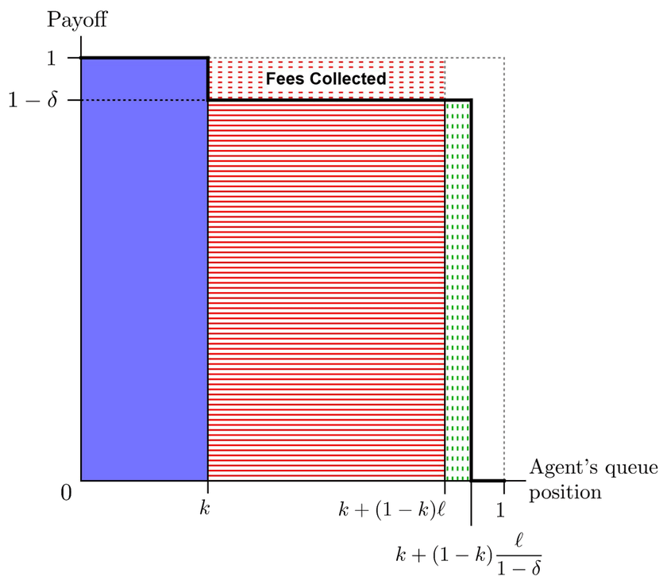

Sand in the Wheels: Addressing Runs through Contingent Fees[SSRN]
Abstract
We show that contingent fees can discourage self-reinforcing bank runs without compromising liquidity provision, deriving their optimal level, format and allocation so as to balance liquidity needs and endogenous run risk. Flat fees triggered by high withdrawals are optimal, reducing runs via a strategic and a payoff channel. Assigning fee revenues to the queue reduces strategic uncertainty while improving liquidity provision, so a high fee is optimal. A “fee-to-the-unpaid” limits liquidity provision but reduces run incentives further, allowing lower fees. Illiquid bank and bond fund assets call for a mixed allocation, while for MMFs a full “fee-to-the-queue” solution is best.

